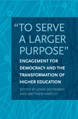

How to return democracy to the heart of a university's mission
How to return democracy to the heart of a university's mission


 How to return democracy to the heart of a university's mission
How to return democracy to the heart of a university's mission

|  |
"To Serve a Larger Purpose"Engagement for Democracy and the Transformation of Higher Educationedited by John Saltmarsh and Matthew Hartley, foreword by David Mathewspaper EAN: 978-1-43990-507-4 (ISBN: 1-4399-0507-X) |
"�To Serve a Larger Purpose� is an extremely timely, important work that synthesizes a long history of the civic engagement movement in particular while providing numerous well-developed examples of both failure and success across a range of initiatives and ideas. By consciously linking the movement for civic education and engagement (for democracy) to the need to transform our educational institutions, this work articulates what many of us who work in higher education know, but can rarely summon the knowledge or time to understand. One finishes this powerful book much better informed about the state of both the civic engagement movement and the very significant problems confronting universities."
—John Wooding, Professor and Former Provost, University of Massachusetts, Lowell
"To Serve a Larger Purpose" calls for the reclamation of the original democratic purposes of civic engagement and examines the requisite transformation of higher education required to achieve it. The contributors to this timely and relevant volume effectively highlight the current practice of civic engagement and point to the institutional change needed to realize its democratic ideals.
Using multiple perspectives, "To Serve a Larger Purpose" explores the democratic processes and purposes that reorient civic engagement to what the editors call "democratic engagement." The norms of democratic engagement are determined by values such as inclusiveness, collaboration, participation, task sharing, and reciprocity in public problem solving and an equality of respect for the knowledge and experience that everyone contributes to education, knowledge generation, and community building. This book shrewdly rethinks the culture of higher education.
Excerpt available at www.temple.edu/tempress
"�To Serve a Larger Purpose� offers a series of cogent arguments for using building democracy as the central purpose of institutional civic engagement. The contributors draw on a rich literature, and the chapters are cohesive, building on and sometimes challenging each other�s points; they read as a continuing conversation. The reader is left with an overview of what it means for an institution to be civically engaged, the knowledge that has accrued in the field up to this point, and what working within a democratic framework means within a contemporary context."
—Cathy Burack, Senior Fellow for Higher Education at the Center for Youth and Communities in the Heller School for Social Policy and Management at Brandeis University
"The various chapters in this volume represent the viewpoints of many recognized contributors to the growth of this field as well as some new voices. Guided by the careful, but provocative framing offered by the editors, the book holds form while providing an abundant 'democratic flowering of civic engagement' through which the two challenges that Saltmarsh and Hartley outlined are actively addressed.... [T]his book offers an extensive review of strategies and examples of the kind of democratic engagement the authors describe. The diverse backgrounds and visions of the body of articles presented add richness to the discussion surrounding the future of civic engagement and service-learning on college campuses."
—Michigan Journal for Community Service Learning
"[W]ell written and (no pun intended) engaging, [they] elaborate, explore, and to some extent qualify the introduction's overview."
—Change
"[A]ll the volume�s authors examine critically what has gotten the [civic engagement] movement to this point, and all offer careful consideration of what will be necessary if civic engagement is to become a truly democratizing, diversifying force that knits higher education into the social fabric."
— Academe
Preface • David Mathews
Introduction “To Serve a Larger Purpose” • John Saltmarsh and Matthew Hartley
1. Democratic Engagement • John Saltmarsh and Matthew Hartley
2. Idealism and Compromise and the Civic Engagement Movement • Matthew Hartley
3. Democratic Transformation through University-Assisted Community Schools • Lee Benson, Ira Harkavy, and John Puckett
4. Civic Professionalism • Harry C. Boyte and Eric Fretz
5. Collective Leadership for Engagement: Reclaiming the Public Purpose of Higher Education • William M. Plater
6. Chief Academic Officers and Community-Engaged Faculty Work • John Woodrow Presley
7. Deliberative Democracy and Higher Education: Higher Education’s Democratic Mission • Nancy Thomas and Peter Levine
8. Faculty Civic Engagement: New Training, Assumptions, and Markets Needed for the Engaged American Scholar • KerryAnn O’Meara
9. Putting Students at the Center of Civic Engagement • Rick M. Battistoni and Nicholas V. Longo
10. Civic Engagement on the Ropes? • Edward Zlotkowski
11. Remapping Education for Social Responsibility: Civic, Global, and U.S. Diversity • Caryn McTighe Musil
12. Sustained City-Campus Engagement: Developing an Epistemology for Our Time • Lorlene Hoyt
13. Conclusion: Creating the Democratically Engaged University—Possibilities for Constructive Action • Matthew Hartley and John Saltmarsh
Contributors
Index
John Saltmarsh is Director of the New England Resource Center for Higher Education at the University of Massachusetts, Boston, and is on the faculty of the Higher Education Administration Doctoral Program in the Department of Leadership in Education in the College of Education and Human Development.
Matthew Hartley is Associate Professor and Chair of the Higher Education Division at the Graduate School of Education at the University of Pennsylvania.
Education
Community Organizing and Social Movements
Political Science and Public Policy
© 2015 Temple University. All Rights Reserved. This page: http://www.temple.edu/tempress/titles/2133_reg.html.